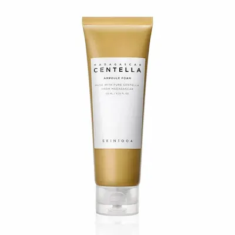

SKIN1004 Madagascar Centella Ampoule Foam: обзор очищающей пенки с центеллой
Независимый редакционный обзор. Продукт предоставлен
BeautyPanda
Данный материал подготовлен в информационных и редакционных целях.
Предоставление продукта для обзора не означает, что содержание
статьи было согласовано с брендом или продавцом.
Представленная информация основана на анализе состава, заявленных
характеристик продукта и доступных данных о его ингредиентах. Она
не является официальной рекомендацией производителя и не заменяет
консультацию специалиста.
Все названия брендов, товарные знаки и наименования продукции
принадлежат их законным правообладателям и используются
исключительно в информационных и редакционных целях.
Средство предоставлено BeautyPanda для независимого редакционного обзора.
Разбираем состав SKIN1004 Madagascar Centella Ampoule Foam 125 ml : роль центеллы азиатской, мягких очищающих компонентов, растительных экстрактов и увлажняющих компонентов, а также особенности использования пенки в уходе за кожей, склонной к высыпаниям, покраснению и раздражению.

SKIN1004 Madagascar Centella Ampoule Foam
Очищающая ампульная пенка с центеллой азиатской для мягкого ежедневного очищения кожи. Формула сочетает мягкие очищающие компоненты с центеллой и растительными экстрактами, помогая поддерживать ощущение комфорта кожи. В обзоре разбираем состав пенки, особенности очищающей формулы и то, как средство может вписываться в уход за кожей, склонной к высыпаниям, покраснению и раздражению.
Почему эта пенка заслуживает внимания?
SKIN1004 Madagascar Centella Ampoule Foam — очищающая пенка для ежедневного ухода за кожей. В основе формулы — центелла азиатская (Centella Asiatica), дополненная мягкими очищающими компонентами, увлажняющими ингредиентами и растительными экстрактами.
Центелла азиатская широко используется в косметическом уходе за кожей, склонной к покраснению и раздражению. Формула также содержит комплекс растительных экстрактов, а за поддержание увлажнения отвечают, в частности, гиалуронат натрия и другие компоненты формулы.
Отдельного внимания заслуживает сочетание очищающей основы и компонентов, направленных на поддержание комфорта кожи. Поэтому в обзоре мы отдельно разберём состав пенки, роль центеллы, особенности очищающих компонентов, растительный комплекс и то, как средство может вписываться в ежедневный уход за кожей, склонной к высыпаниям, покраснению и раздражению.
Текстура и первое использование
SKIN1004 Madagascar Centella Ampoule Foam имеет формат очищающей пенки, предназначенной для использования в ежедневном уходе. При контакте с водой средство образует мягкую пену, которая помогает удалить загрязнения и остатки ухода с поверхности кожи.
Согласно рекомендациям производителя, небольшое количество средства необходимо вспенить с водой, нанести на влажную кожу лица и мягко помассировать. После очищения пенку тщательно смывают водой.
При первом использовании важно учитывать индивидуальную переносимость кожи. Даже мягкое очищающее средство может ощущаться по-разному в зависимости от состояния кожного барьера и других продуктов в уходе. Если после умывания появляется выраженное чувство стянутости, жжение или стойкое покраснение, стоит пересмотреть частоту использования и остальные очищающие средства в рутине.


Разбор состава: Что внутри?
Одним из ключевых компонентов формулы является Centella Asiatica (центелла азиатская) — компонент, который широко используется в косметическом уходе за кожей, склонной к покраснению и раздражению. В формуле пенки центелла сочетается с мягкими очищающими компонентами и увлажняющими ингредиентами.
Очищающую основу формулы составляют мягкие поверхностно-активные вещества, которые помогают удалить загрязнения и остатки средств ухода с поверхности кожи. Производитель также указывает кокосовые производные очищающие компоненты, которые используются для создания пены и очищающего действия средства.
Помимо центеллы, формула содержит комплекс растительных экстрактов, включая экстракты какао, коптиса, кокцинии и эклипты. Такой растительный комплекс дополняет формулу и используется в составе средства для поддержания комфорта кожи во время ежедневного очищения.
За дополнительное увлажнение отвечают гиалуронат натрия и другие компоненты формулы. При этом пенка остаётся именно очищающим средством: её основная задача — удалить загрязнения с кожи, а не заменить сыворотку или увлажняющий крем в последующих этапах ухода.


Кому стоит учитывать особенности формулы?
SKIN1004 Madagascar Centella Ampoule Foam может представлять интерес для ежедневного очищения нормальной, комбинированной и жирной кожи, а также кожи, склонной к высыпаниям. Благодаря формату пенки средство удобно использовать как базовый этап ухода утром и вечером.
Наличие центеллы азиатской и растительных экстрактов делает формулу интересной для тех, кто предпочитает очищающие средства с дополнительными компонентами, направленными на поддержание комфорта кожи. Однако реакция на косметические ингредиенты может быть индивидуальной.
При чувствительной коже особенно важно обращать внимание не только на отдельные активные компоненты, но и на то, как кожа переносит само очищение. Если после умывания регулярно появляется выраженная стянутость, сухость или раздражение, стоит уменьшить частоту очищения или пересмотреть остальные средства в уходе.
Если в уходе уже используются активные средства для работы с акне, например кислоты, ретиноиды или бензоилпероксид, очищение должно оставаться максимально комфортным. Сама пенка не заменяет средства, предназначенные для лечения акне, и её основная функция заключается именно в очищении кожи.
Как правильно использовать пенку?
SKIN1004 Madagascar Centella Ampoule Foam предназначена для ежедневного очищения кожи. Небольшое количество средства следует нанести на влажные ладони, добавить немного воды и вспенить. Полученную пену мягко распределяют по влажной коже лица, избегая слишком интенсивного трения.
После лёгкого массажа пенку необходимо тщательно смыть водой. Очищение не требует длительного воздействия или сильного давления на кожу. После умывания можно переходить к следующим этапам ухода — сыворотке, увлажняющему средству и, утром, солнцезащитному крему.
Если кожа склонна к сухости или раздражению, важно ориентироваться на её реакцию после умывания. При выраженном ощущении стянутости, сухости или дискомфорта стоит уменьшить интенсивность очищения и пересмотреть сочетание других очищающих средств в уходе.


Практические нюансы применения
Используйте SKIN1004 Madagascar Centella Ampoule Foam на влажной коже. Небольшого количества средства достаточно для создания пены, поэтому наносить большое количество продукта необходимости нет.
При склонности кожи к высыпаниям важно не пытаться очищать её до ощущения «скрипа». Слишком интенсивное трение или чрезмерно агрессивное очищение может усиливать ощущение сухости и дискомфорта. Мягкие движения во время умывания позволяют очистить кожу без лишнего механического воздействия.
Если пенка используется утром, после очищения следует продолжить привычный уход и завершить его солнцезащитным средством с подходящим SPF. Вечером после очищения можно использовать остальные средства ухода в соответствии с потребностями кожи.
Где найти SKIN1004 Centella Ampoule Foam?
SKIN1004 Madagascar Centella Ampoule Foam 125 ml представлена у BeautyPanda. Уточнить актуальное наличие и стоимость можно непосредственно у продавца.
Магазины Beauty Panda в Молдове:
📍 Сорока
str. Grigore Vieru 9B, Soroca, Moldova, MD-3001
📍 Дрокия
str. 31 August 20/C, Drochia, Moldova
*Наличие, стоимость и условия покупки рекомендуется уточнять у продавца перед визитом. Ссылка ведёт на страницу продавца в Instagram.
Часто задаваемые вопросы
Для какого типа кожи подходит SKIN1004 Centella Ampoule Foam?
Пенка предназначена для ежедневного очищения кожи и может представлять интерес для нормальной, комбинированной и жирной кожи, в том числе склонной к высыпаниям. При этом индивидуальная переносимость очищающих средств может различаться.
Можно ли использовать пенку при коже, склонной к акне?
Да, пенку можно использовать как базовый этап очищения кожи, склонной к высыпаниям. При этом средство не является лекарством от акне и не заменяет активные средства, которые применяются непосредственно для лечения высыпаний.
Есть ли в составе центелла?
Да. В составе SKIN1004 Madagascar Centella Ampoule Foam присутствует Centella Asiatica — центелла азиатская. Она широко используется в косметическом уходе за кожей, склонной к покраснению и раздражению.
Можно ли использовать пенку каждый день?
Да, средство предназначено для ежедневного очищения кожи. Частоту использования при этом стоит адаптировать к состоянию кожи. Если после умывания регулярно появляется выраженная сухость, стянутость или раздражение, стоит пересмотреть интенсивность очищения и остальные средства в уходе.
Может ли пенка вызвать сухость или раздражение?
Индивидуальная реакция на очищающие средства возможна. Особенно важно учитывать состояние защитного барьера кожи и остальные продукты в уходе. При появлении выраженной сухости, жжения или стойкого покраснения использование средства следует прекратить и оценить реакцию кожи.